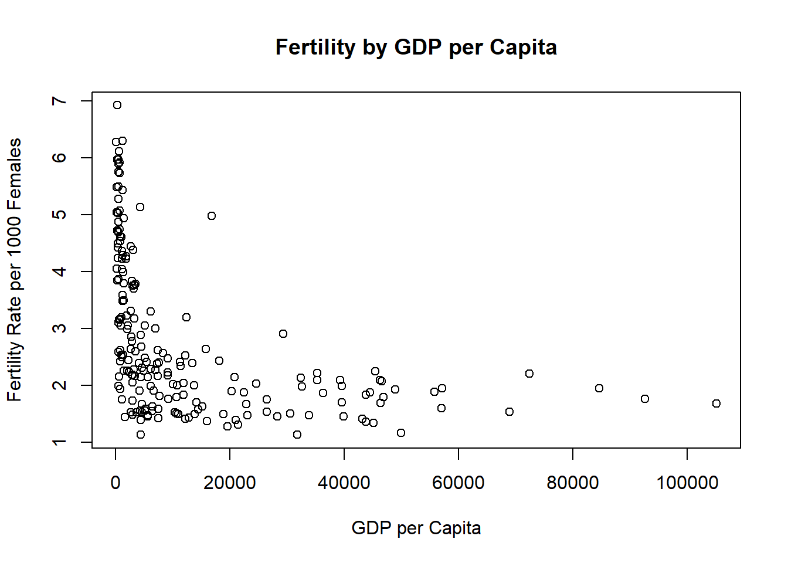
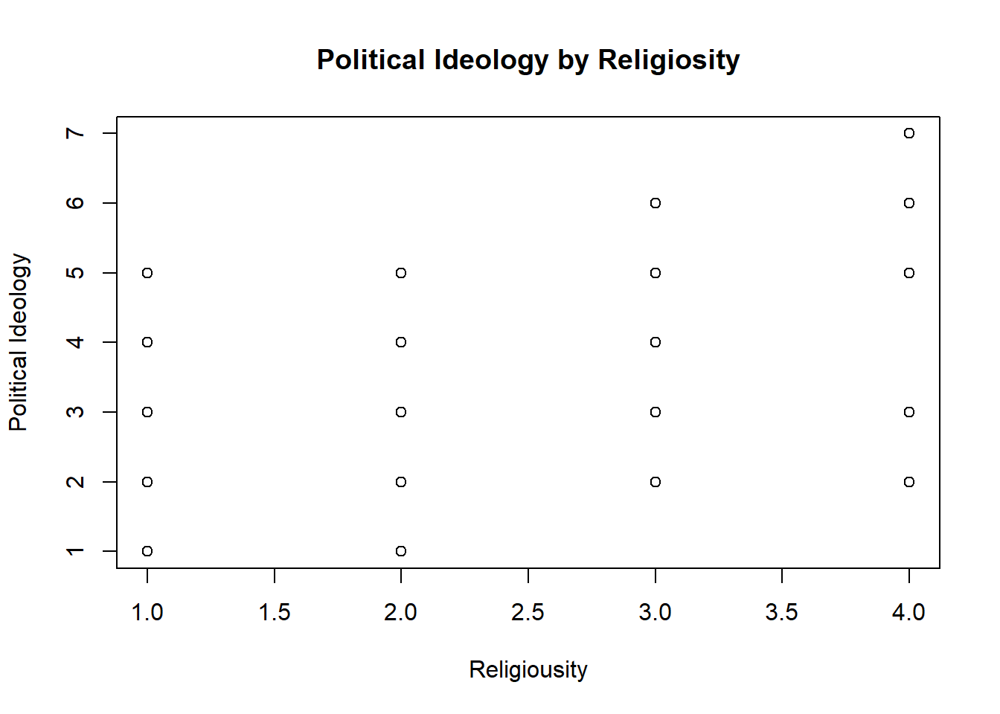

Loading required package: car
Loading required package: carData
Attaching package: 'car'
The following object is masked from 'package:dplyr':
recode
The following object is masked from 'package:purrr':
some
Loading required package: effects
lattice theme set by effectsTheme()
See ?effectsTheme for details.
Code
library(smss)
Warning: package 'smss' was built under R version 4.2.2
Question 1
Part 1
The predictor is the ppgdp, the gross national product per person in U.S. dollars, and the response is fertility, the birth rate per 1000 females.
Part 2
Code
data(UN11)options(scipen =999)plot(fertility ~ ppgdp, data = UN11, main="Fertility by GDP per Capita", xlab ="GDP per Capita", ylab ="Fertility Rate per 1000 Females")

A straight-line function does not seem applicable to this graph because the trend of the data appears closer to a quadratic or exponential function. There are very many high values of fertility rate on the very low end of the x axis, but then this sharply changes between 10,000 and 20,000.
Part 3
Code
plot(log(fertility) ~log(ppgdp), data = UN11, main="Log of Fertility by Log of GDP per Capita", xlab ="Log of GDP per Capita", ylab ="Log of Fertility Rate per 1000 Females")
Using the logs of each variable results in a different graph where a straight line would fit better than in the previous graph. A simple linear regression model seems plausible here.
Question 2
Part A
The slope of the prediction equation might decrease because the British pound is worth more U.S. dollars, so the slope would be increasing by the same number of units (for both 1.33 U.S. dollars and 1 British pound) but over a larger span of the x-axis.
Part B
The correlation would not change because the relationship between annual income and the dependent/response variable is the same regardless of units of measurement.
Question 3
Code
pairs(water, upper.panel =NULL)
It looks like there has been a lot more runoff at the OPRC, OPSLAKE, BSAAM, and APSLAkE in recent years. Runoff in the earliest years seemed to me more random and spread out.
Question 4
Code
pairs(Rateprof[,8:12], upper.panel =NULL)
It looks like as the ratings of professors’ quality of teaching increased, helpfulness and clarity ratings also increased. However, easiness and interest ratings don’t seem to be as correalted with these variables.
Question 5
Political Ideology vs Religiosity
Part A
Code
data(student.survey)student.survey$pi <-unclass(student.survey$pi)student.survey$re <-unclass(student.survey$re)# In the political ideology variable, very conservative = 7 and very liberal = 1# In the religiosity variable, attending religious services every week = 4, and never = 1plot(pi ~ re, data = student.survey, main ="Political Ideology by Religiosity", xlab ="Religiousity", ylab ="Political Ideology")

Part B
Code
fit1 <-lm(pi ~ re, data = student.survey)summary(fit1)
Call:
lm(formula = pi ~ re, data = student.survey)
Residuals:
Min 1Q Median 3Q Max
-2.81243 -0.87160 0.09882 1.12840 3.09882
Coefficients:
Estimate Std. Error t value Pr(>|t|)
(Intercept) 0.9308 0.4252 2.189 0.0327 *
re 0.9704 0.1792 5.416 0.00000122 ***
---
Signif. codes: 0 '***' 0.001 '**' 0.01 '*' 0.05 '.' 0.1 ' ' 1
Residual standard error: 1.345 on 58 degrees of freedom
Multiple R-squared: 0.3359, Adjusted R-squared: 0.3244
F-statistic: 29.34 on 1 and 58 DF, p-value: 0.000001221
For the variables political ideology and religiosity, there seems to be a correlation between them. The p-value for religiosity is much smaller than the alpha value of 0.05, indicating that there is statistically significant evidence showing religiosity affects students’ political ideology. The two are positively related, meaning that, within the regression model, for an increase in religiosity (attending more religious services) by 1, there is a 0.97 increase in political ideology (more conservative or less liberal).
High School GPA versus TV Watching
Part A
Code
plot(hi ~ tv, data = student.survey, main ="High School GPA by Hours of TV Watched", xlab ="Avg Hours/Week Watching TV", ylab ="High School GPA")
Part B
Code
fit2 <-lm(hi ~ tv, data = student.survey)summary(fit2)
Call:
lm(formula = hi ~ tv, data = student.survey)
Residuals:
Min 1Q Median 3Q Max
-1.2583 -0.2456 0.0417 0.3368 0.7051
Coefficients:
Estimate Std. Error t value Pr(>|t|)
(Intercept) 3.441353 0.085345 40.323 <0.0000000000000002 ***
tv -0.018305 0.008658 -2.114 0.0388 *
---
Signif. codes: 0 '***' 0.001 '**' 0.01 '*' 0.05 '.' 0.1 ' ' 1
Residual standard error: 0.4467 on 58 degrees of freedom
Multiple R-squared: 0.07156, Adjusted R-squared: 0.05555
F-statistic: 4.471 on 1 and 58 DF, p-value: 0.03879
There also seems to be a correlation between the variables high school GPA and hours of TV watched per week. The p-value for hours of TV is less than the alpha value of 0.05, indicating that there is statistically significant evidence showing TV watching affects students’ high school GPA. The variables are negatively related: for every hour of TV watched per week (on average), there is a 0.018 decrease in high school GPA based on the regression model.
Source Code
---title: "DACSS 603 HW 3"author: "Karen Kimble"desription: "Homework 3 for DACSS 603"date: "10/31/2022"format: html: toc: true code-fold: true code-copy: true code-tools: truecategory: HW3---```{r}# Setuplibrary(tidyverse)library(dplyr)library(alr4)library(smss)```## Question 1### Part 1The predictor is the ppgdp, the gross national product per person in U.S. dollars, and the response is fertility, the birth rate per 1000 females.### Part 2```{r}data(UN11)options(scipen =999)plot(fertility ~ ppgdp, data = UN11, main="Fertility by GDP per Capita", xlab ="GDP per Capita", ylab ="Fertility Rate per 1000 Females")```A straight-line function does not seem applicable to this graph because the trend of the data appears closer to a quadratic or exponential function. There are very many high values of fertility rate on the very low end of the x axis, but then this sharply changes between 10,000 and 20,000.### Part 3```{r}plot(log(fertility) ~log(ppgdp), data = UN11, main="Log of Fertility by Log of GDP per Capita", xlab ="Log of GDP per Capita", ylab ="Log of Fertility Rate per 1000 Females")```Using the logs of each variable results in a different graph where a straight line would fit better than in the previous graph. A simple linear regression model seems plausible here.## Question 2### Part AThe slope of the prediction equation might decrease because the British pound is worth more U.S. dollars, so the slope would be increasing by the same number of units (for both 1.33 U.S. dollars and 1 British pound) but over a larger span of the x-axis.### Part BThe correlation would not change because the relationship between annual income and the dependent/response variable is the same regardless of units of measurement.## Question 3```{r}pairs(water, upper.panel =NULL)```It looks like there has been a lot more runoff at the OPRC, OPSLAKE, BSAAM, and APSLAkE in recent years. Runoff in the earliest years seemed to me more random and spread out.## Question 4```{r}pairs(Rateprof[,8:12], upper.panel =NULL)```It looks like as the ratings of professors' quality of teaching increased, helpfulness and clarity ratings also increased. However, easiness and interest ratings don't seem to be as correalted with these variables.## Question 5### Political Ideology vs Religiosity#### Part A```{r}data(student.survey)student.survey$pi <-unclass(student.survey$pi)student.survey$re <-unclass(student.survey$re)# In the political ideology variable, very conservative = 7 and very liberal = 1# In the religiosity variable, attending religious services every week = 4, and never = 1plot(pi ~ re, data = student.survey, main ="Political Ideology by Religiosity", xlab ="Religiousity", ylab ="Political Ideology")```#### Part B```{r}fit1 <-lm(pi ~ re, data = student.survey)summary(fit1)```For the variables political ideology and religiosity, there seems to be a correlation between them. The p-value for religiosity is much smaller than the alpha value of 0.05, indicating that there is statistically significant evidence showing religiosity affects students' political ideology. The two are positively related, meaning that, within the regression model, for an increase in religiosity (attending more religious services) by 1, there is a 0.97 increase in political ideology (more conservative or less liberal).### High School GPA versus TV Watching#### Part A```{r}plot(hi ~ tv, data = student.survey, main ="High School GPA by Hours of TV Watched", xlab ="Avg Hours/Week Watching TV", ylab ="High School GPA")```#### Part B```{r}fit2 <-lm(hi ~ tv, data = student.survey)summary(fit2)```There also seems to be a correlation between the variables high school GPA and hours of TV watched per week. The p-value for hours of TV is less than the alpha value of 0.05, indicating that there is statistically significant evidence showing TV watching affects students' high school GPA. The variables are negatively related: for every hour of TV watched per week (on average), there is a 0.018 decrease in high school GPA based on the regression model.